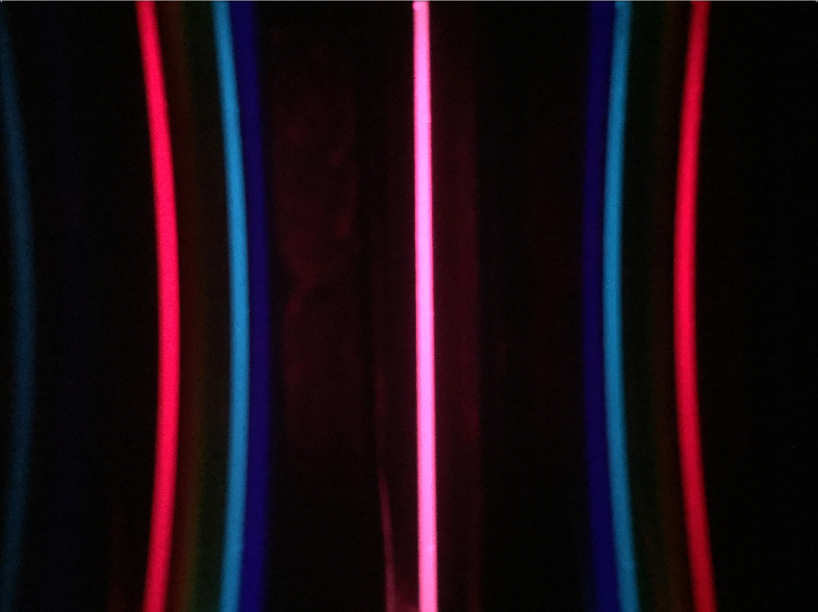
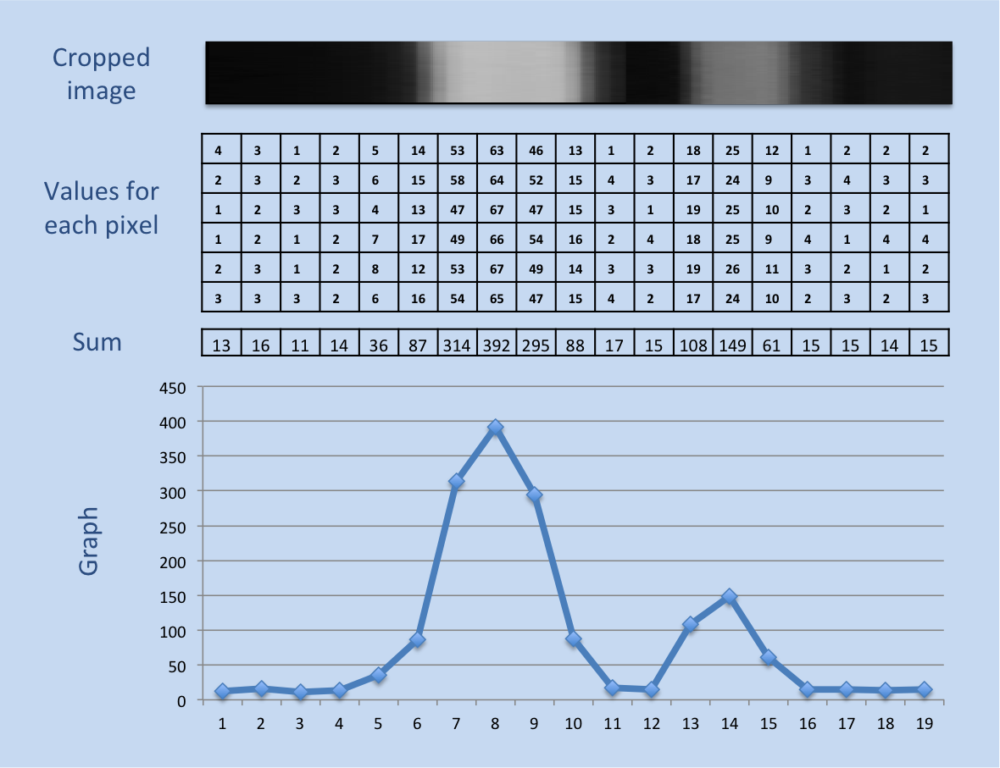
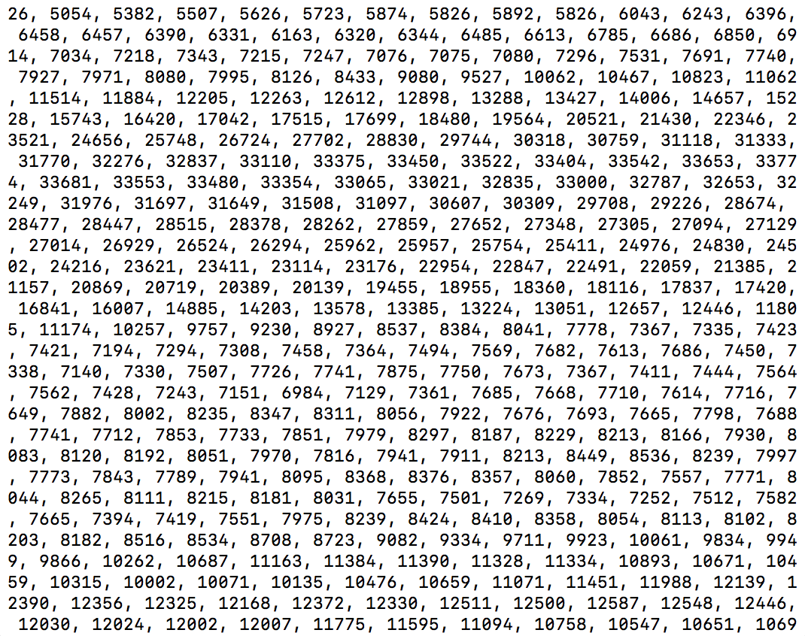
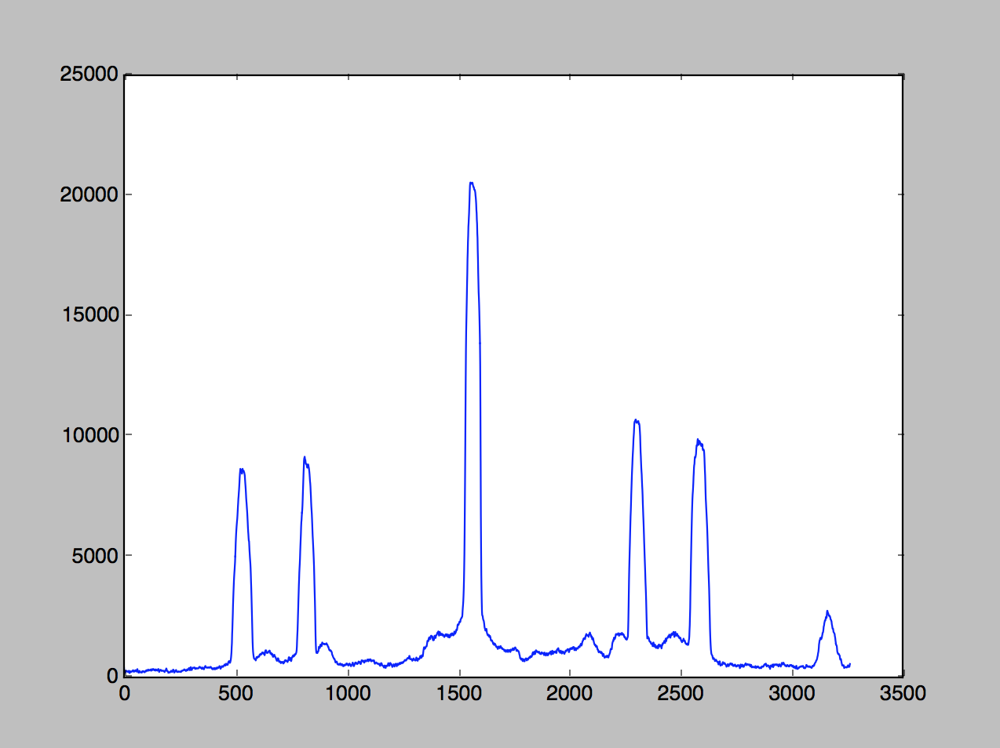
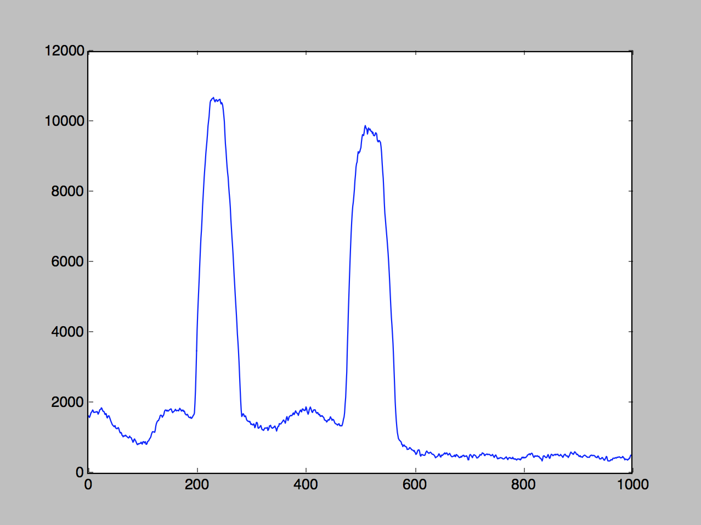
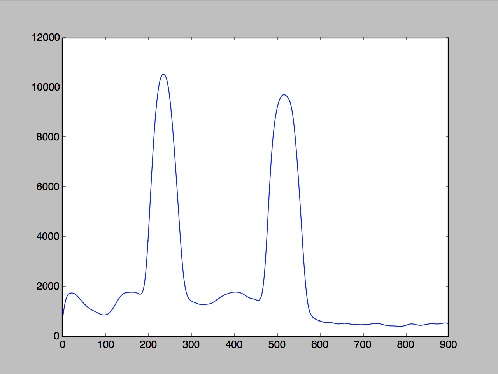

What is the goal of this project?
Use my phone's camera to identify a gas based on its spectrum.
Context
This project evoleved from a discussion about telescopes I had with my students after the April 2016 transit. For more details, look here .
What tools did I use?
A diffraction grating and poster board for the camera attachment, python for the coding.
Introduction
Our cellphone cameras capture images using technology very similar to that found in space telescopes. This journey began with an attempt to plot the black body radiation from our sun and will hopefully end with a program that identifies a gas based on its spectral lines.
A spectroscope breaks apart the light from an object into separate wavelengths. Because different objects have unique spectral "fingerprints", knowing what wavelengths of light come from that object can teach is about the object. For example, astronomers use the spectra of distant stars and galaxies to determine what they are made of and how fast and in what direction they are moving.
In the spring of 2016 I was fortunate enought to observe a ten-or-so-times per lifetime transit of Mercury. While sharing the event with my physics classes (Click here for the backstory) I started to wonder if I could use my own smartphone camera to build a spectroscope. Afterall, the cameras that astronomers use to capture pictures of the sky are built with the same technology as the cameras in our smartphones.
Steps
- Build the phone attachment
- Take the picture
- Straighten the curve (Not an actual step. Click here for an interesting sidetrack)
- Make a histogram
- Calibrate the data
Step 1: Build the Phone Attachment
I based my design off the example from MIT Open Courses, and modified it to fit my phone.
I found an ugly magenta phone case in a bargin bin for $3. With a bit of (unnecessary) spray paint, I converted it to a more reasonable and boring black.
I cut up a small piece of difraction grating, found in my classroom but also avaible online for cheap. Or you could do what MIT recommends and cut up a CD, although if you're like me you would have to go out a buy a CD to cut up. Where's AOL when we need them?
I shortened the tube until I could see the full spectrum as large as possible, around 2 cm long, I think. In one model (found here), the tube was bent to the side to capture the rainbow from just one side of the slit, but I thought it might be nice to have two sides to get twice as much data. (Just kidding, I was too lazy to make a slanted cut).
The final spectroscope looked like this:

Step 2: Take the Picture
I have a massive advantage as a physics teacher, because I have access to the glowing tubes we use when investigating the electromagnetic spectrum.
Surprisingly, the trickiest part of this part of this adventure was finding a program to take pictures without compression.
"Oh no!" the internet says. "Nowadays compression algorithms are so good that there is pratically no loss of information. There's no reason you could ever want to deal with uncompressed data", they say.
What they haven't considered is you might be a physics teacher with a passing interest in astronomy and a desire to build your own optical instruments.
(Internet people thinking they know what you want grumble grumble grumble multinational corporations cough cough apple cough cough removing features from the default camera app grumble grumble grumble)
Anyway, I eventually found a free app that would let me save my pictures as tif files.
Here's what the raw data looked like:
Step 4: Make a Histogram
There are a few steps to get from the raw data to a histogram
Read in the data
To read in the data I used a python module called "Pillow"
from PIL import Image
def readImage(element):
tiff = "tif/Element" + str(element) + ".tif"
img = Image.open(tiff)
return img
At this point the data just looks like the original picture:
Crop the image and convert to grayscale
You probably noticed that the image was curved. My first though was to straighten out the curve, assuming the shape was a parabola. This was a lot of fun to do, but ultimately resulted in data that was not as nice as if I just ignored the curve and cropped from the middle.
def cropImage(img, CropHeight):
width, height = img.size
box = (0, height/2-CropHeight/2, width, height/2+CropHeight/2)
img = img.crop(box).convert('L')
return imgage
Flatten the image
The goal here was to turn my two dimensional array into a single dimension of data. I did this by summing up all the data in each row (see image).

def flattenImage(img):
w, h = img.size
data = []
for x in range(w):
value = 0
for y in range(h):
value = value + img.getpixel((x,y))
data = data + [value]
return data
The result was a long string of numbers, of which I've shown 360 or so below. Real exciting, right?
A better way to view the data is probably in a graph, with pixel position on the x-axis and brightness on the y. The results look like this:
Find the center
The data shows a bright line down the center flanked by to roughly symmetrical sets of data. That vertical central band should be in the center of the photo, but no guarentees. It'd be better to find the center ourselves.
I did this by first finding the maximum value of the data set. Because the central band could have been lopsided, I then found the points two thirds from the top to the left and right, and took the average of their positions.
def findCenter(data):
maximum = 0 # maximum value
maximum_x = 0 # x position of maximum value
for x in range(0, len(data)):
if data[x] > maximum:
maximum = data[x]
maximum_x = x
twothirds = maximum * .6667
bottom = maximum_x
top = maximum_x
while data[bottom] > twothirds:
bottom = bottom - 1
while data[top] > twothirds:
top = top + 1
return int((bottom + top)/2)
Crop the data to visible wavelengths
Now that we have the center, we can crop out only the part of the picture containing visible light. I could have used the data to the left or the right, but I chose the data to the right. Roughly speaking, the visible wavelengths begin about 500 pixels from the central bright line, and end about 1500 pixels from it.

def cropData(data, center, start, end):
start = center+start
end = center+end
data = data[start:end]
return data
Smooth out the data to reduce noise

def smoothData(data, times):
for i in range(0, times):
smooth_data = []
for x in range(0, len(data)-1):
smooth_data = smooth_data + [(data[x-1]+2*data[x]+data[x+1])/4]
data = smooth_data
return data
Find the peaks
def findPeaks(data):
peakPosition = []
peakHeight = []
avg = sum(data)/len(data)
for x in range(1, len(data)-1):
if data[x-1] < data [x] and data[x+1] < data[x] and
data[x] > avg:
peakHeight = peakHeight+[data[x]]
peakPosition = peakPosition+[x]
return (peakPosition,peakHeight)
Step 5: Calibrate the Data
Convert Pixel Positon to Wavelength
(Code exists, but the explanation is still in progress)